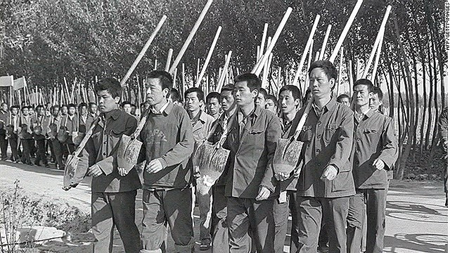
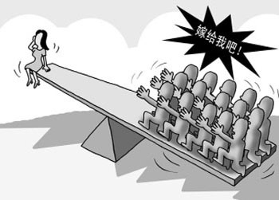

When it comes to reproductive rights in the Western world, the most prevalent discussion is on a woman’s right to a safe abortion. But let's escape our bubble and travel to the other side of the world, where a very different discussion is happening: China.
Leading up to the One-Child Policy
Since the beginning of 2016, China has had a two-child policy in place of its former one-child policy, which was mandated in September of 1980. The policy was introduced in an attempt to curb the out-of-control population growth. Ironically, prior to the one-child policy, the Chinese government’s plan had been to encourage growth. Chairman Mao, the former leader of the ruling Communist Party of China, firmly believed that a larger population would lead to a more prosperous economy. Makes sense, right? More people, more human resources. People were encouraged to have more children. Coupled with improved sanitary conditions and healthcare, China’s population grew at an increasing rate. But what Mao failed to realize was that a sudden surge in population was dangerous for the standard of living without an equal and sustainable increase in resources.
Any second-generation Chinese immigrant can recount life under Mao’s regime. We grow up listening to stories from our parents: bellies carved by hunger, skin coated by crusts of grime, and weathered clothes and shoes riddled with holes and tears (in both senses of the word). China’s people were living in extreme poverty. 30 million people died from famine in 1962. Mao was desperate. His misjudgment had cost both him and China dearly. Despite the futility of backpedaling, he tried. Contraception was doled out to the masses, family planning was encouraged, and abortion was no longer demonized by the government. Fun fact: with only two children, my grandmother was considered a model citizen and gave frequent speeches at assemblies to remind her comrades to be dutiful to the State by “marrying late in life and having few children” (晚婚少育健康长寿).
Unfortunately, these solutions (which only would have worked in the long-term) were not enough to solve a crisis that was believed to require an immediate one. After much internal debate, Deng (Mao’s successor) and the Chinese government finally decided to formally implement a one-child policy in 1980 by way of an open letter to the public. Families were only allowed to have one child, although exceptions were made for minority groups, rural families, and the famous and powerful.
During the One-Child Policy
Chinese laogai labor camps. AFP/Getty Images
When you’re a communist government, it’s in your people’s best interests to obey you. If they don’t, their neighbours, coworkers, friends, family—even their children—will probably report them. People couldn’t protest or express their dismay, for to do so meant being labelled as a political dissident and subsequently sent to a labor camp where they would be treated as slaves under the pretense of reform and education. And so most people in cities were well-behaved, as they were constantly being monitored.
The government began giving out free contraception and educating young adults on sex and birth control. However, the condoms they issued were horrible quality and would often rip during intercourse or melt in the sweltering heat of summer. To make it worse, many people didn’t take advantage of the free condoms because the government hadn’t successfully erased the stigma associated with sex. It was still viewed as a shameful activity to be hidden at all costs.
In any case, women were still getting pregnant when they didn’t want to or weren’t allowed to, either because they weren’t ready to have their first child or because they already had one. Unfortunately, they were also always the ones who bore the punishment. Forced female sterilization and abortion was common. Couples who carried through with the pregnancy in secret were rebuked in public assemblies, fired or given a pay cut, fined, and treated as criminals. Women who terminated the pregnancy were also ostracized for practicing the shameful act of sex with a partner. Gossip always spread like wildfire.
But let’s not forget that China had barely accessible rural areas where it was difficult for the government to sex-ducate and distribute condoms. Here the government was more lenient. That’s not to say they didn’t have any troubles. Properties were seized and trashed, livestock were stolen, clothes were burned, and pots were smashed by fellow villagers. The State had instilled the belief that any family with too many children put a strain on the Chinese economy and society, and as such must feel the same strain at home. To avoid bringing this type of shame to the family, women drank poison to abort the baby. It was painful, dangerous, and often resulted in more than just killing the baby—complications with severe physical repercussions and oftentimes death.
Many women also ended up giving birth in secret. These children, nicknamed ‘ghost children’ now, had no legal identity. The State refused to acknowledge their existence without a hefty fine (think five times a couple’s combined annual income). These children could not go to school, receive medical care, or get a job. The girls were often drowned and abandoned, or sold into human trafficking rings to become child prostitutes. The boys were often given away or sold to families having trouble conceiving a male heir. If the woman had relatives from another part of China, she could pay them to raise the child for her.
The Aftermath
Despite the recent legalization of two-child families, couples are reluctant to abandon the one-child family model. The one-child policy has made it very expensive to raise a child in China now. Parents want their child to succeed, so they slip bulky red pockets to teachers and enroll their kid in a million classes on the weekend. The costs of schooling and tutoring have accordingly skyrocketed. Parents who don’t follow the intense Asian parent stereotype are often thought to not care about their child. As you can see, Chinese people invest an exorbitant amount of time and money into raising one child. Couples don’t want to put in that much effort a second time around.
The Chinese government claims that the institution of the one-child policy has stopped 400 million births. However, many argue that the decrease in birth rate wasn’t completely up to the policy. In fact, statistics reflect that developed countries generally have lower birth rates. Women are no longer forced to stay at home and have babies all day as a growing number of people are becoming non-religious or at least critical of certain religious teachings and women are becoming empowered. Infant mortality rates are also lower with better healthcare and education (i.e. parents know how to take care of their children properly). Under communism in China, women and men alike had jobs, organized religion was banned, and healthcare improved — all attributes tied to lower fertility rates.
To be frank, the one-child policy was just not that necessary. The government had pressed the panic button far too early. With propaganda (which China was pretty good at creating) and natural economic development, China’s population growth rate would likely have gradually slowed anyway. Instead, millions of mothers were forced to give up their fetuses, existing children, fertility, and health. Millions of women committed suicide because they were overwhelmed by shame, ridicule, loss, and guilt. Millions of ghost children lived with heartache every day, unable to truly connect with their families.
Due to its unfortunate choice in policy, the Chinese government is now plagued by a number of existing and impending problems. According to projections from the United Nations, China’s elderly (aged 65+) will take up 27.1% of the entire population (1.3 billion) by the year 2050. The burden is on the workforce to support and take care of the elderly and the young, as there is a heavy stigma attached to live-in nurses and nursing homes.

“Come on, marry me!” Worldpress.org
There’s also the problem of there being a gender imbalance in China due to decades of female infanticide. In 2020, the National State Population and Family Planning Commission estimates that there will be 30 million more men of marrying age than women of marrying age. It’s turning into such a sausage fest that men are turning to mail-order brides from poor countries in South Asia, making illegal immigration a growing problem as well.
While the Chinese government maintains that the one-child policy has been effective, you can see why I have my doubts. It has done lasting, irreparable damage to families and women in particular all over the country and royally screwed up the lives of a generation to come. It’s hard to guess what measure China will use next, but one thing’s for certain — it’ll be interesting to see how they get out of this pickle.
The views in these articles are those of the writers and not necessarily of TldrHub Media.